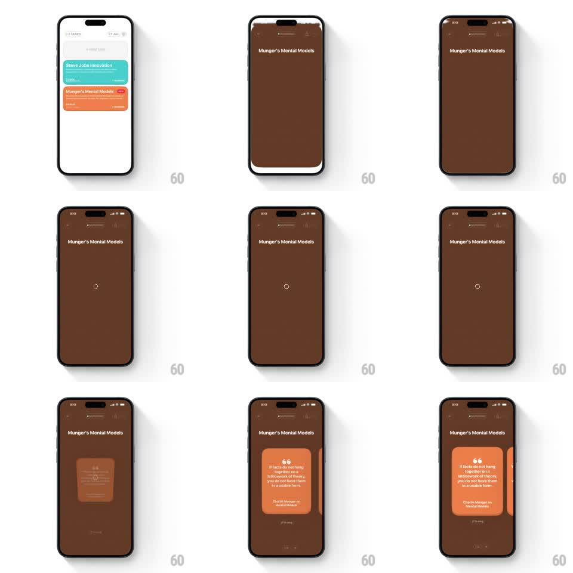

Media
Frame-by-frame

Rebuild this interaction 1:1: Eimi's card-to-screen morph - tapping a task card scales it up to fill the whole screen as a colored loading state with a small spinning ring at center, before the detail content arrives.

Rebuild this interaction 1:1: Eimi's card-to-screen morph - tapping a task card scales it up to fill the whole screen as a colored loading state with a small spinning ring at center, before the detail content arrives. ## Integration Integration: stack-agnostic spec - springs given as stiffness/damping, timed motions as duration + curve; map every value to your framework and animation library of choice. ## Scene Eimi tasks list, white: colored task cards (teal "Steve Jobs Innovation", orange "Munger's Mental Models" with a red tag). Tapped state: the card's color expands to a full-bleed screen (warm brown) titled "Munger's Mental Models", empty except a small spinner at center; then the quote detail card fades in. ## Motion spec Pattern: shared-element card scaling into a full-screen loading state. - On tap, the card lifts (scale 1 -> 1.03, 120ms) then expands to fill the screen: its bounds animate to full-bleed over 350ms (ease-in-out), corner radius 16 -> 0, its color deepening from card-orange to the screen's brown. - The card's title travels to the top-center header position during the expansion (shared element, same 350ms) while the card's body content fades out (first 150ms). - Once full-bleed, a small ring spinner fades in at exact center (200ms) and rotates (1s per turn, linear) - the screen is otherwise empty color. - On load complete (~1.2s), the spinner fades (150ms) and the detail quote card scales in from 0.9 -> 1 with a soft rise (translateY 16 -> 0, 300ms ease-out). - Back navigation reverses the morph: detail content fades, screen contracts back into the list card. ## Calibration - The expansion must read as the card itself growing - one continuous surface, never a wipe. - The spinner is small (~20px) and quiet - the color field is the loading state. ## Reduced motion Crossfade from list to detail (250ms) with a static loading beat. ## Don't miss - The header title is the card's title moved, not re-rendered - keep font size continuity through the flight. - The status bar area tints to the card color as the expansion completes.